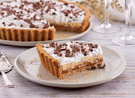

bannofe

ingredientes
- 3 a 4 bananas caturra
- 1 pote de creme de leite fresco
- 1/2 pacote de bolacha maisena
- 2 potes de doce de leite cremoso
- 4 colheres de açúcar
- 4 colheres de sopa de manteiga
modo de preparo
- Misture o biscoito triturado com a margarina culinária, com a ponta dos dedos, até formar uma massa lisa.
- Forre o fundo de uma forma de abrir (fundo falso), e asse por apenas 10 minutos, em forno preaquecido a 180°C.
- Retire
- Deixe a massa esfriar
- Coloque o doce de leite sobre a massa já fria.
- Alise para ficar plano
- Pique as bananas em rodelas, e distribua-as sobre o doce de leite.
- Coloque a nata por cima (se preferir, pode batê-la para deixar em ponto de chantilly), e alise
- Pegue uma peneira pequena e espalhe a canela por cima passando-a pela peneira, para que pulverize melhor por toda a torta.
- Deixe na geladeira por 3 horas antes de desenformar..